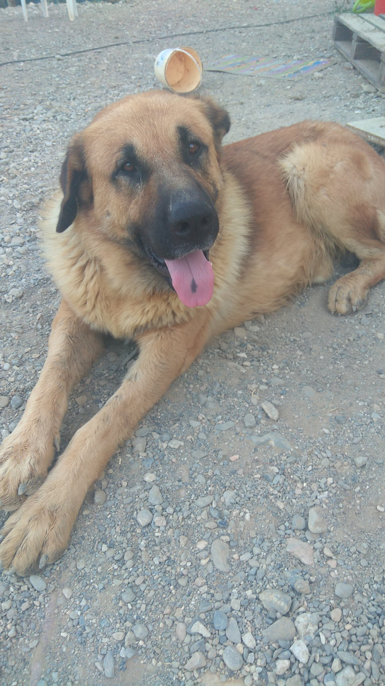

Gynna
¡Conoce a Gynna!
Quien es Gynna
Gynna es un bulldog frances que nacio en el 2012.
Fue mi primera perrita, era muy mimosa y le gustaba mucho la sandía.
Cuando nacio tenia muchos problemas ya que se le soltaba el lagrimal o un problema alimentario ya que tenia alergias que estaban en mucho producto alimentarios como el trigo, la soja o el maíz.
Siempre la veias corriendo de un lado a otro en la casa y le gutaba mucho el campo, pero odiaba el agua de la ducha o el sonido de las explosiones de los petardos
Familia

Frodo
Feus
Tobi